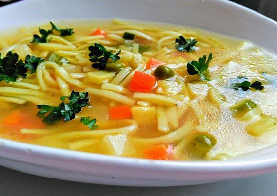

Tradiční vývarová polévka ze slepice s kořenovou zeleninou, novým kořením a polévkovými nudlemi.
Slepici pořádně očistíme a naporcujeme.
Do hrnce dáme studenou vodu a vložíme díly slepice. Na malém plamenu táhneme vývar k bodu varu.
Jakmile se začne srážet bílkovina na povrchu, odstraníme ji a přidáme na větší kusy nakrájenou kořenovou zeleninu, nové koření, bobkový list, celý pepř a osolíme.
Vaříme na mírném ohni v zakrytém hrnci, aby vývar jen probublával, cca 2 hodiny podle stáří slepice.
Vývar scedíme a do čistého vývaru vložíme mrkev, nakrájená prsa ze slepice, jarní cibulku a nudle. Pomalu vaříme do změknutí nudlí.
Podáváme horké.